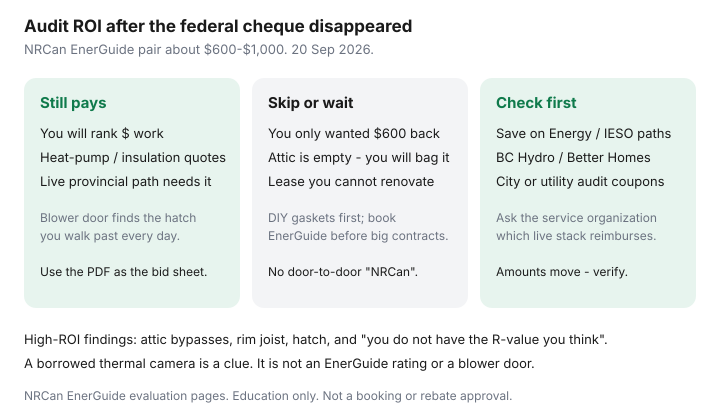

Utilities · Canada
Is a Home Energy Audit Still Worth It in Canada Without Greener Homes Grants?
Households cancelled the energy advisor when the federal cheque died, then spent another winter arguing with a contractor’s iPad. An EnerGuide evaluation was never the grant. The grant used to reimburse part of the invoice. The evaluation is still a blower door, a GJ/year rating, and a renovation list you can hand to bidders. Whether it is worth $600–$1,000 without Greener Homes is a use-the-PDF question, not a nostalgia question.
What the visit includes is in the EnerGuide companion. Rank the work with upgrade order and attic R-values.
Disclosure: Home energy monitors are an offer type that can baseline kWh after you pick a lever. Saving Optimizer may earn a commission if we later add partner links. We do not currently claim advisor, NRCan, or contractor partnerships. This is education — not an EnerGuide booking or rebate approval.
Key takeaways
- NRCan’s public cost note remains about $600–$1,000 for a pre- plus post-retrofit pair, paid to the service organization, varying by province and house. The old up-to-$600 federal contribution travelled with a closed grant file.
- The audit pays if you will use the upgrade report to rank work or to collect comparable quotes on a contract you cannot undo. It does not pay if you only wanted a federal rebate that no longer exists.
- High-ROI findings are usually boring: attic bypasses, the hatch, rim joist, and “you do not have the R-value you think.”
- Ask the listed service organization which live municipal, utility, or provincial path still reimburses (Save on Energy, BC Hydro / Better Homes, city coupons). Amounts move.
- DIY thermal photos and a bill baseline are enough for gaskets. They are not a blower door and not an EnerGuide rating.
Break-even logic when no federal grant reimburses the evaluation
Write three numbers:
- Advisor quote (get two from NRCan-listed service organizations).
- Minus any live municipal or utility coupon they will actually file.
- Divided by the dollars you expect to save in the next two or three winters because the report changed what you bought.
If the only change is “we already knew the attic was empty and we will add cellulose Saturday,” skip the rating unless you want a listing label or a program that still names EnerGuide. If the change is “we will not sign an $18,000 window package because the report ranked air sealing,” the PDF just paid for itself. Greener Homes Grant last document day for existing applicants was 31 Dec 2025; the Loan closed 1 Oct 2025 with funding committed (NRCan page dated 17 Apr 2026); OHPA intake closed 31 Jul 2026.

High-ROI findings audits commonly surface (air sealing, attic)
Advisors are not magicians. They are a fan in the door and a trained eye. The expensive surprises are usually:
- Attic hatch and pot-light bypasses you walk under every day.
- Rim joist and basement header that never saw foam.
- A “R-40 attic” that is R-20 in the middle and nothing at the eaves.
- Ducts in an unconditioned soffit.
- A furnace or water heater story that does not match the nameplate.
Those lines are also the cheap Saturday. The report’s value is making them official so a window salesperson cannot talk you out of them. See DIY air sealing.
Municipal / utility subsidized audit programs to check first
Before you pay rack rate, ask:
- Ontario: Save on Energy / IESO and LDC Home Renovation Savings-style paths open and close. Some still tie a rebate to an assessment. Confirm the live page the week you book — do not invent a 2023 dollar amount.
- B.C.: BC Hydro and Better Homes / CleanBC sometimes discount evaluations or require them on a larger stack. Income-qualified paths are a different door.
- Cities and utilities: one-off “$100 off an audit” coupons appear in fall campaigns. They are not national.
The service organization, not a Facebook ad, tells you which current program reimburses. Door-to-door “free NRCan audit” pitches remain a red flag.
Combining audit insights with provincial rebate stacks
Use the upgrade report as the quote sheet: named RSI targets, areas, air-sealing scope. Then open the live provincial list (CleanBC, Québec’s current offers, Save on Energy, utility heat-pump pages) and map each line. A heat pump on an unsealed attic is how people say “heat pumps don’t work in Canada.” Closed federal stacks do not belong on the spreadsheet. The companion rebate checklist is verify-at-sign, not a promise.
DIY alternatives: thermal camera borrow, bill baselining
A library or hardware-store thermal camera on a −15°C night will show the hatch and the rim joist. That is enough to buy weatherstrip. It is not an airtightness number, not a GJ/year label, and not something a rebate administrator will file.
Bill baselining: write last January’s kWh or m³, then this January’s, then the next after you seal. An energy monitor or Green Button export helps the next month. It does not replace the meter or the blower door. Weather differs; direction still matters.
Decision tree: audit now vs fix obvious leaks first
| If this is you | Do this first | Book EnerGuide when |
|---|---|---|
| Hatch is a picture frame; you own the attic | Gaskets, weatherstrip, cellulose plan — this Saturday | Before a five-figure insulation or heat-pump contract |
| You want windows because the flyer is glossy | Read the window-film companion; film the worst pane | If you still want a package — use the report to say no |
| Contractor already “knows you need spray foam” | Pause. Get a listed advisor, not the contractor’s free audit | Now — before you sign |
| You only miss the Greener Homes cheque | Do not book for nostalgia | Only if a live provincial path still names EnerGuide |
Canada Greener Homes Affordability Program is a separate low-to-median-income retrofit path delivered with provinces — not a DIY grant beside an EnerGuide PDF. Check the current NRCan pointer; do not invent an amount.
Sources & date stamps
- NRCan, EnerGuide home evaluation — blower door, GJ/year, upgrade report; find listed service organizations (used 20 Sep 2026).
- NRCan, typical $600–$1,000 for pre- plus post-retrofit evaluations; no door-to-door sales.
- NRCan, Greener Homes Grant / Loan / OHPA status — closed to new applicants as dated on those pages.
- Save on Energy and BC Hydro program hubs — verify-live municipal and utility audit subsidies (20 Sep 2026).
Frequently asked questions
Is an audit worth it if I cannot get the old $600 back?
Yes if you will use the report to rank work or collect quotes. No if you only wanted the vanished federal contribution.
How much does it cost now?
NRCan’s public note is about $600–$1,000 for the pair, varying by province and house. Get two quotes. Ask what live coupon exists.
Can I skip the blower door?
Not if you want an EnerGuide rating. DIY infrared is a clue, not a substitute.
Should I fix the attic first?
If the hatch is obviously open and you will only add cellulose, do that Saturday. Book EnerGuide before a contract you cannot undo.
Who is allowed to sell me an “NRCan audit” at the door?
You contact a listed service organization. They send a registered energy advisor. Cold-call “NRCan” is a red flag.